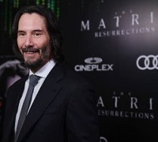
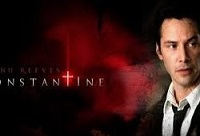

Keanu Reeves
El Hombre de la bolsa
Keanu Charles Reeves , conocido como Keanu Reeves, es un actor y músico canadiense. Es conocido por Interpretar a Neo en "Matrix" y a John Wick en la saga "John Wick".
Nacimiento: 2 de septiembre de 1964 (edad 59 años), Beirut, Líbano Estatura: 1.86 m Próxima película: Ballerina Nominaciones: Teen Choice Award al Mejor Beso en Película, MÁS Padres: Samuel Nowlin Reeves, Jr., Patricia Taylor Hermanos: Kim Reeves, Emma Reeves, Karina Miller
La ciudad de Nueva York se llena de balas cuando John Wick, un exasesino a sueldo, regresa de su retiro para enfrentar a los mafiosos rusos, liderados por Viggo Tarasov, que destruyeron todo aquello que él amaba y pusieron precio a su cabeza. John Wick está siendo perseguido con un contrato "abierto" de $14 millones de dólares por su vida debido a que rompió una regla fundamental

La película plantea que en el futuro, tras una dura guerra, casi todos los seres humanos han sido esclavizados por las máquinas y las inteligencias artificiales creadas. Estas los tienen en suspensión y con sus mentes conectadas a una realidad virtual llamada "Matrix" que representa el final del siglo XX.
Constantine es una película estadounidense de 2005 del género thriller de acción, dirigida por Francis Lawrence y protagonizada por Keanu Reeves y Rachel Weisz. Con un guion de Kevin Brodbin y Frank Cappello, la película se basa en John Constantine, personaje de los cómics de Hellblazer de DC Comics. Fue recibida por los críticos de cine con reacciones mixtas, retrata a John Constantine como un psíquico con la capacidad de percibir y comunicarse con ángeles y demonios en su verdadera forma.
Pelicula 47 Ronnin
La película de Netflix que es protagonizada por Keanu Reeves y no podrás dejar de ver. La sinopsis oficial de 47 Ronin dice: "Acción y aventura con 47 samuráis que quedan descastados tras la muerte de su señor y planean una paciente venganza contra el responsable". Fecha de estreno: 9 de enero de 2014 (Argentina) Director: Carl Rinsch Presupuesto: 170 millones USD Recaudación: 151.8 millones USD Año: 2013 Guion: Chris Morgan; Hossein Amini